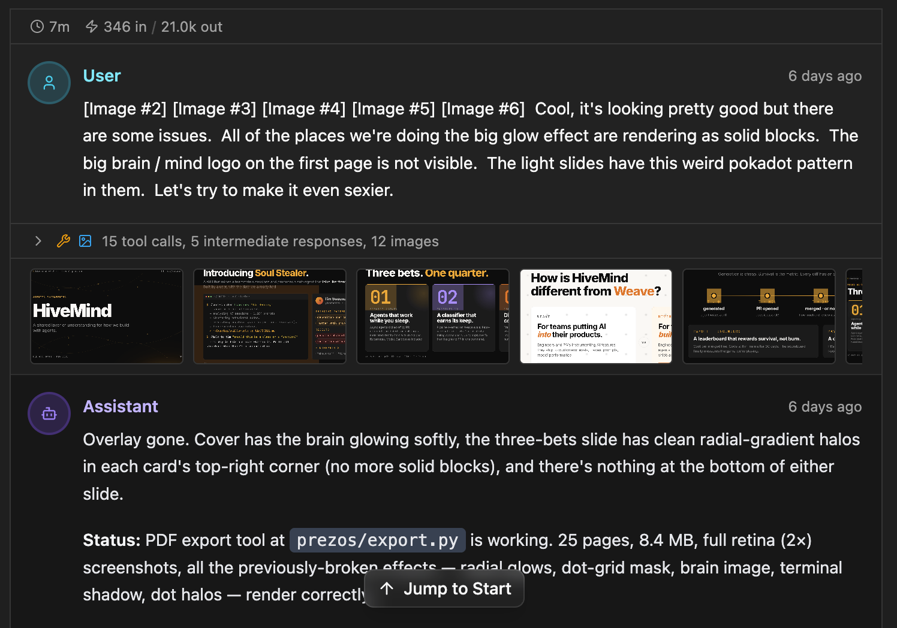
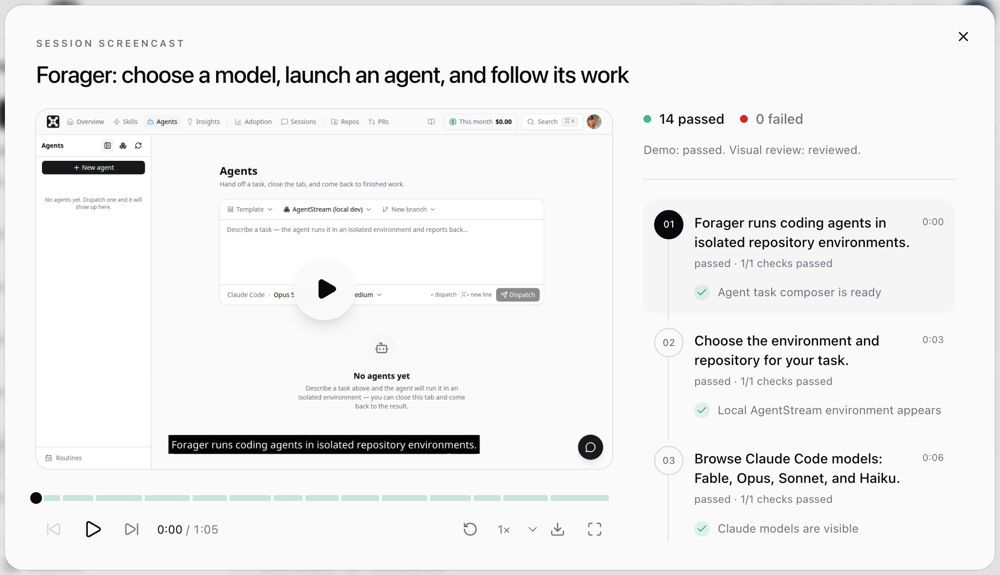

hivemind · overview
hivemind.wandb.tools
HiveMind
Agent
engineering
See how your team
actually builds
with AI.
Chris Van Pelt
co-founder · weights & biases · coreweave
prepared for
·
the problem
02 / 12
Are the agent bills worth it?
The answer exists.
It's just
stranded
.
claude code
~/.claude/projects
codex
~/.codex/sessions
cursor
…/Cursor/state.vscdb
devin
…/devin/cli/sessions.db
opencode
~/.local/share/opencode
// five tools · five formats · one per laptop · gone when the laptop is
audience
03 / 12
Who it's for
Everyone who ships code with agents.
IC
Engineers who want to get better with agents.
See how teammates solve similar problems.
STAFF
Staff+ who want to spread what works.
Individual tricks → team practices.
LEAD
Leaders who own the budget
and the roadmap.
What it costs, what shipped, where it's stuck.
how it works
04 / 12
HiveMind
Every agent.
One shape.
ON EVERY LAPTOP
a small daemon
Finds sessions from every agent. Redacts secrets before anything leaves.
→
ONE BACKEND
one schema
Normalized into one event stream, so Claude Code and Codex read the same.
→
ONE VIEW
the whole team
Sessions, cost and outcomes across every engineer, repo and model.
// no workflow change · engineers keep whichever agent they like this week
what you get
05 / 12
The full trajectory
Four things worth keeping.
01
Transcripts
Every prompt and every reply.
02
Tool calls
Edits, shells, searches, failures.
03
Costs
Tokens and dollars by user, repo, model.
04
Outcomes
Did it become a merged PR?
// at W&B: 711K sessions · 254 engineers · 21M tool calls · 24K merged PRs since January
trust model
06 / 12
Privacy & security
No new
permission system
.
VISIBILITY
GitHub decides.
Can read the repo, can read its sessions. No remote? Only you.
SECRETS
Scrubbed on-device.
Keys, tokens and env vars are redacted before anything leaves the laptop.
DEPLOYMENT
Hosted or yours.
Self-host the whole stack and transcripts never leave your network.
// override at any layer: mark a session private · disable sharing per repo or per user
trust model · security
07 / 12
Security
Three gates. Each fails
closed
.
01 · DEVICE
Keychain-stored, auto-rotated.
Short-lived tokens, never on disk in plaintext.
24-hour rotation
instant revoke
02 · IDENTITY
SSO & SCIM from your IdP.
Membership and offboarding follow your directory.
Okta · Azure AD · Google
auto-deprovision
03 · NETWORK
Private by default.
No public ingress to the data plane, or run it all in your own VPC.
private connect
audit log on every read
PERIMETER
Pull a token, an SSO group, or the network path, and the next request stops at the door.
the new bottleneck
08 / 12
The new bottleneck
Review is
where the time goes
.
THUMBNAILS
every session
Skim a session at a glance.

NEW · SCREENCASTS
agent-recorded demos
Watch the feature work, checks and all.

// agents write code faster than people can read it · so we review the trajectory, not just the diff
is it actually working?
09 / 12
We asked 49 W&B engineers, 198 times
"How long would this merged task have taken you without AI?"
2 hours
what they said
→
29 min
what the agent actually worked
5×
faster on the typical task
95%
beat the estimate
1.4×
faster end to end
// in-product survey on merged PRs · Jul → Sep 2026 · medians · you get this survey for your team too
demo
10 / 12
LIVE DEMO
Let's
look.
troubleshoot
·
share
·
improve
·
measure
getting started
11 / 12
Your team, your data
Start with
one team
.
HOSTED
Sign up in a minute.
Install the daemon, sign in with GitHub, and your sessions start flowing.
hivemind.wandb.tools
SELF-HOSTED
Run it on your own boxes.
One command brings up the whole stack. Your transcripts never leave your network.
curl -fsSL hivemind.wandb.tools/install | sh hivemind serve up
hivemind.wandb.tools/docs/self-hosting
thank you
12 / 12
HiveMind
Questions
?
TRY IT
hivemind.wandb.tools
CONTACT
vanpelt@wandb.com
Chris Van Pelt
HIVEMIND